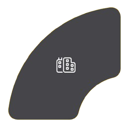
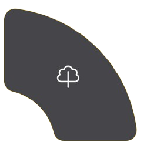
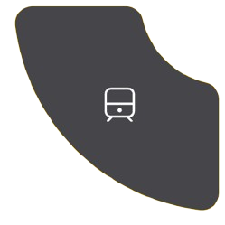
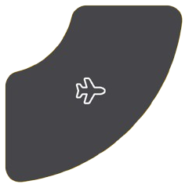

Allo Taxi Sud Alpilles
Votre partenaire de confiance pour tous vos déplacements
Transport de qualité et ponctuel dans toute la région des Alpilles (Tarascon, Fontvieille, St-Étienne-du-Grès & ses alentours).
Demandez un devis Réservation expressTransport de qualité et ponctuel dans toute la région des Alpilles (Tarascon, Fontvieille, St-Étienne-du-Grès & ses alentours).
Demandez un devis Réservation expressServices de taxis traditionnels pour vos trajets urbains et VTC haut de gamme pour une expérience personnalisée et luxueuse.
Arrivez à l'heure pour votre train ou votre vol avec notre service ponctuel de transfert vers toutes les gares et aéroports de la région.
Transport médical conventionné offrant confort et sécurité pour vos rendez-vous médicaux, avec véhicules spécialement équipés.
Découvrez la région ou organisez le transport pour vos évènements spéciaux avec nos services adaptés à vos besoins spécifiques.
Tarifs fixes sans surprises pour tous vos transferts vers les aéroports et gares de la région. Prix connus à l'avance pour une tranquillité d'esprit totale.
Solutions sur mesure pour les entreprises, les partenaires et les particuliers avec des besoins réguliers. Bénéficiez de tarifs préférentiels adaptés à votre fréquence d'utilisation.
Réservez en ligne via notre formulaire facile à utiliser ou appelez notre centre d'appels disponible 24h/7j pour une assistance personnalisée.
Précisez vos adresses de départ et d'arrivée, la date, l'heure et le nombre de passagers pour une organisation optimale de votre trajet.
Recevez une confirmation instantanée de votre réservation, avec les détails de votre chauffeur et l'heure d'arrivée prévue.
Plus d'une décennie d'expertise dans le transport local
Une qualité de service exceptionnelle reconnue
À votre service à toute heure du jour et de la nuit
Entreprise locale, ancrée dans la région Sud, Allo Taxi Sud s'engage
pour la qualité, la sécurité et votre satisfaction. Notre équipe de
professionnels expérimentés est dédiée à vous offrir un service de
transport irréprochable.
Allo Taxi Sud est bien plus qu'un simple service de taxi. Nous
sommes votre partenaire de confiance pour tous vos déplacements,
avec une équipe d'experts et une flotte de véhicules confortables.
Nos tarifs compétitifs et notre service de qualité, vous
garantissent une expérience de transport inoubliable.
Couverture complète des principales agglomérations avec disponibilité immédiate 24h/24.


Service étendu aux zones rurales et petites communes sur réservation préalable.
Présence garantie à toutes les gares TGV et régionales pour vos arrivées et départs.


Nous desservons l'ensemble des aéroports de la région Sud, avec la garantie d'être à l'heure.
Véhicules élégants et spacieux, idéaux pour 1 à 4 passagers avec bagages standards.
Parfaits pour les familles ou petits groupes jusqu'à 6 personnes avec bagages.
Équipements spéciaux pour personnes à mobilité réduite, accessibilité et confort garantis.
"J'utilise Allo Taxi Sud pour mes déplacements professionnels depuis 3 ans. Ponctualité irréprochable et chauffeurs toujours courtois. Un service 5 étoiles que je recommande vivement !"
"Le transport médical d'Allo Taxi Sud nous a changé la vie. Les chauffeurs sont attentionnées et nous aident toujours avec nos bagages. Un confort inégalé pour nos rendez-vous médicaux."
"Service impeccable pour notre transport à l'aéroport avec nos enfants. Véhicule spacieux, siège bébé fourni comme demandé et prix fixe sans surprise. Parfait !"
Cet été, les Alpilles seront le théâtre de nombreuses festivités à ne pas manquer : concerts, dégustations de vin, marchés artisanaux et feux d'artifice. Notre guide vous aidera à planifier votre séjour pour profiter pleinement de cette saison estivale riche en évènements culturels et divertissements festifs.
Découvrez notre article sur les meilleurs circuits de dégustation de vin dans la région, avec nos recommandations de domaine à ne pas manquer.
Allo Taxi Sud s'engage pour l'environnement avec l'introduction progressive de véhicules hybrides et électriques dans notre flotte. Optez pour un trajet éco-responsable.
Comment puis-je réserver un taxi immédiatement ?
Pour une réservation express, avec prise en charge immédiate 7/7j, vous pouvez nous contacter par téléphone :
Proposez-vous des forfaits pour les entreprises et les partenaires ?
Absolument ! Nous offrons des solutions personnalisées pour les entreprises et les partenaires Allo Taxi Sud avec tarifs préférentiels. Contactez notre service pour une solution adaptée à vos besoins.
Comment fonctionne le transport médical conventionné ?
Notre service de transport médical conventionné est agréé par la sécurité sociale. Sur prescription médicale, vos frais peuvent être prise en charge. Nos véhicules sont spécialement équipés pour votre confort. N'hésitez pas à vous renseigner.
Comment peut-on effectuer une réservation ou demander un devis ?
Pour effectuer une réservation ou demander un devis, vous pouvez nous contacter par e-mail à contact@allo–taxi–sud–alpilles.com, via le formulaire de contact ci-dessous ou par téléphone au :